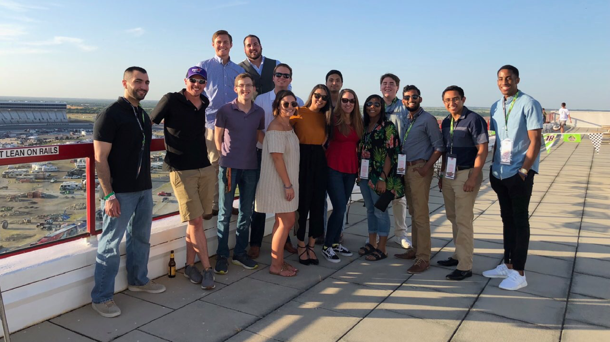
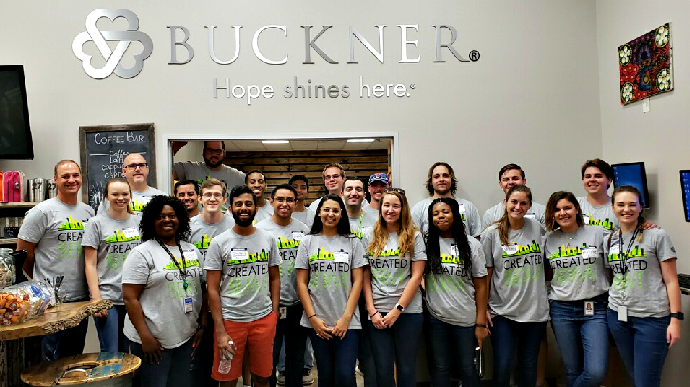

Interstate Batteries Internship
Over summer '18 I had the amazing opportunity to intern at
Interstate Batteries corporate office in the digital marketing department focusing mainly
on
front-end web development, marketing, and analytics. Being that the internship was the first
of my undergraduate education, working at Interstate Batteries was my first introduction to the
full-time working world.
My daily tasks at Interstate were all centered around their online website. Using Sitecore CMS, I helped translate Photoshop and Sketch wireframes into responsive Bootstrap code to be deployed live website. I also contributed to SEO efforts in code on web pages. Our digital marketing & web development team was cross-functional, collaborative, creative, agile, and objective focused. At the end of our internship, all interns worked in groups to present ideas for attracting future millenials to apply to the Interstate to company executives.
Going in to my internship, I knew that the workload wouldn't be the most challenging part of the whole experience. I was eager for an opportunity to be placed out of my comfort zone and into a flowing and very alive, business social environment. Interstate made such a needed transition painless. The structure of the internship program at Interstate helped me blossom and let me have fun while doing it via social, volunteerism, and networking events. Interstate's atmosphere and culture was one that allowed me to be my best self and successfully fulfil my goals.
My daily tasks at Interstate were all centered around their online website. Using Sitecore CMS, I helped translate Photoshop and Sketch wireframes into responsive Bootstrap code to be deployed live website. I also contributed to SEO efforts in code on web pages. Our digital marketing & web development team was cross-functional, collaborative, creative, agile, and objective focused. At the end of our internship, all interns worked in groups to present ideas for attracting future millenials to apply to the Interstate to company executives.
Going in to my internship, I knew that the workload wouldn't be the most challenging part of the whole experience. I was eager for an opportunity to be placed out of my comfort zone and into a flowing and very alive, business social environment. Interstate made such a needed transition painless. The structure of the internship program at Interstate helped me blossom and let me have fun while doing it via social, volunteerism, and networking events. Interstate's atmosphere and culture was one that allowed me to be my best self and successfully fulfil my goals.

Summer '18 interns last day after presenting projects

Summer '18 interns at the Interstate Batteries' suite at the Texas Motor Speedway

Summer '18 interns & recruiting team volunteering at Buckner International

Summer '18 interns & recruiting team volunteering at Buckner International